Overview
Gameblyo is a mobile app for amblyopia therapy that uses games and red-cyan glasses to train both eyes to work together. It replaces traditional eye patch treatment, which often causes discomfort and low compliance, with 30 minutes of daily gameplay.
I co-founded the project and led design from research to launch and beyond.
The Problem
What is Amblyopia?
Amblyopia aka Lazy Eye is an eye condition when the vision of one of your eyes doesn’t develop the way it should. Without treatment, your brain will learn to ignore the image that comes from the weaker eye.
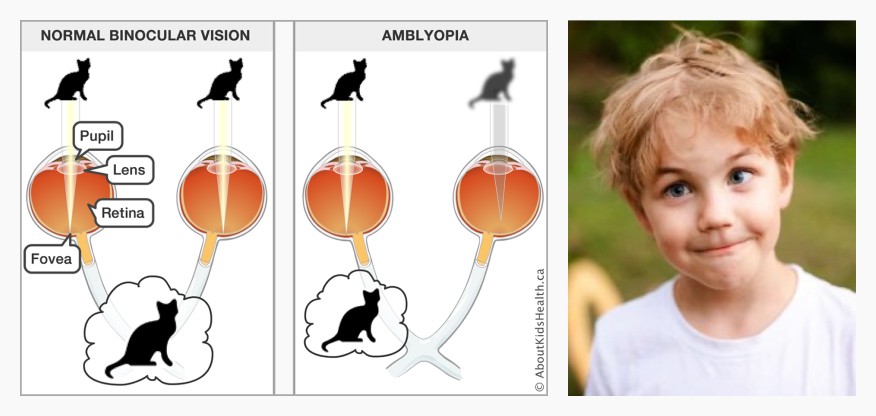
Target Audience
People suffering from amblyopia, mostly children form 3 to 12 years old. Eye doctors and clinics.
Here are the problems
- Wearing eye patches for too long (4-6 hours daily).
- Eye patches cause discomfort, allergies, and emotional issues.
- Misunderstandings between children and parents.
- Vision doesn't improve or return to normal (binocular vision).
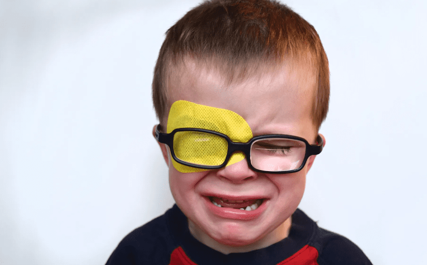
Research
Expert interviews
Worked with an optometrist from the largest children's vision center in Riga, Latvia, specializing in amblyopia . She served as our primary subject matter expert throughout the project, guiding clinical accuracy and treatment parameters.
Market Analysis
In 2019, approximately 99.2M people worldwide had amblyopia, estimated to increase to 175.2M by 2030 and potentially reach 221.9M by 2040.
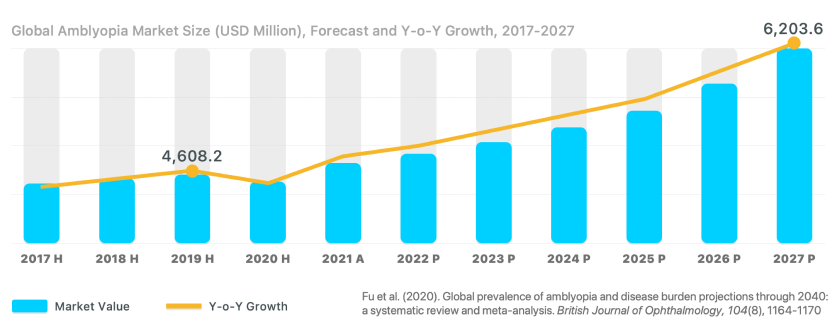
Market Analysis
×In 2019, approximately 99.2M people worldwide had amblyopia, estimated to increase to 175.2M by 2030 and potentially reach 221.9M by 2040.
Competitor Analysis
Studied existing apps — what worked, what didn't, how they were built, and what users said about them.
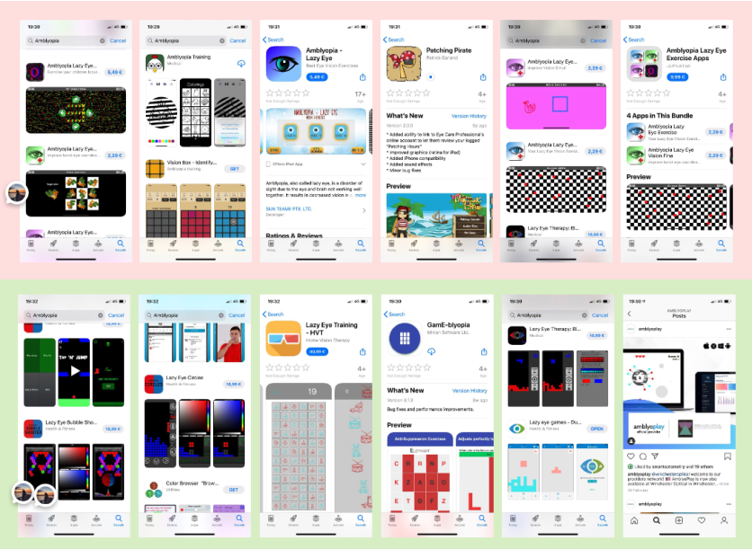
Competitor Analysis
×Studied existing apps — what worked, what didn't, how they were built, and what users said about them.
Game adaptation
Selected classic games that could be adapted for amblyopia treatment and were feasible to develop quickly: Snake, Blocks, Flappy Bird, and others.
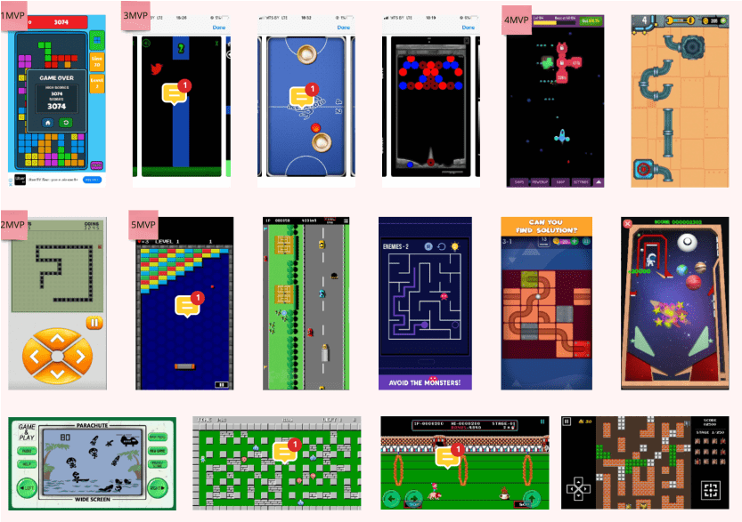
Adaptation Playground
×FSelected classic games that could be adapted for amblyopia treatment and were feasible to develop quickly: Snake, Blocks, Flappy Bird, and others.
Design Process
Information Architecture
Built a sitemap and detailed user flows covering registration, onboarding, game configuration (eye settings, color calibration), gameplay, and progress tracking.
Sitemap
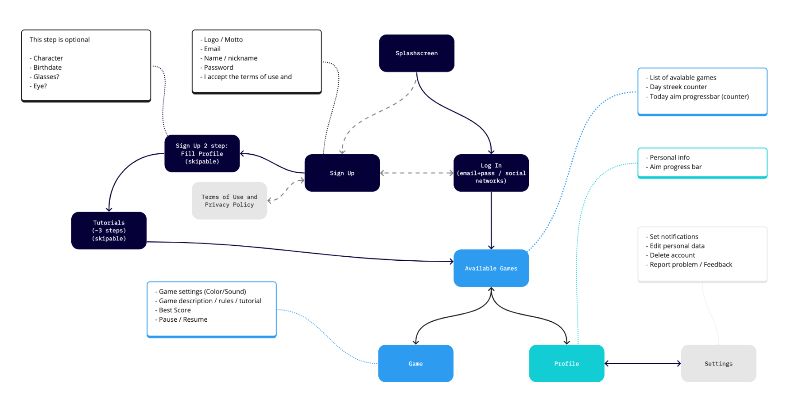
User flows
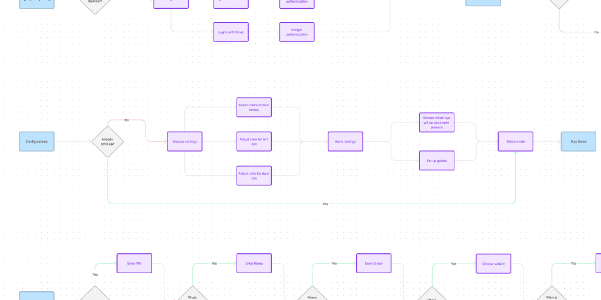
Wireframes & prototypes
Created wireframes in Figma, then built interactive prototypes for two core flows — registration/onboarding and game/settings — allowing us to test the experience before development.
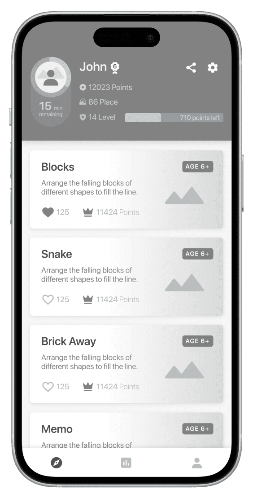
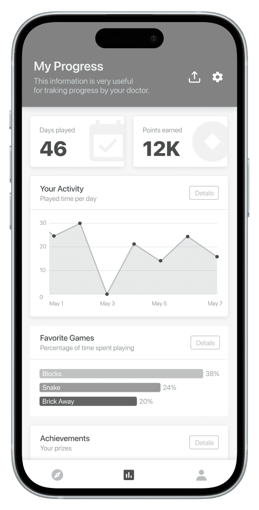
Character & Gamification
Designed a penguin mascot wearing red-cyan glasses to bridge the gap between healthcare seriousness and child-friendliness. Gamification elements keep kids motivated and coming back.
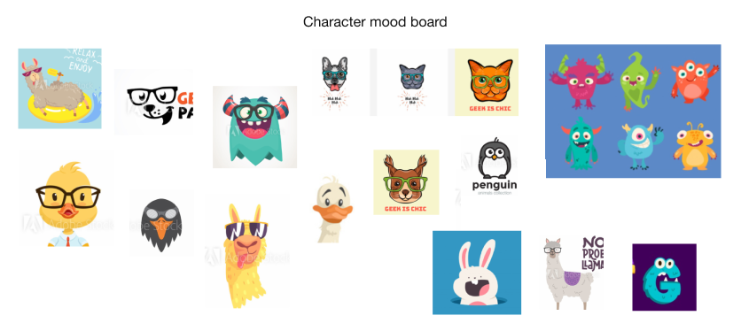
Character / Logo
×Designed a penguin mascot wearing red-cyan glasses to bridge the gap between healthcare seriousness and child-friendliness. Gamification elements keep kids motivated and coming back.
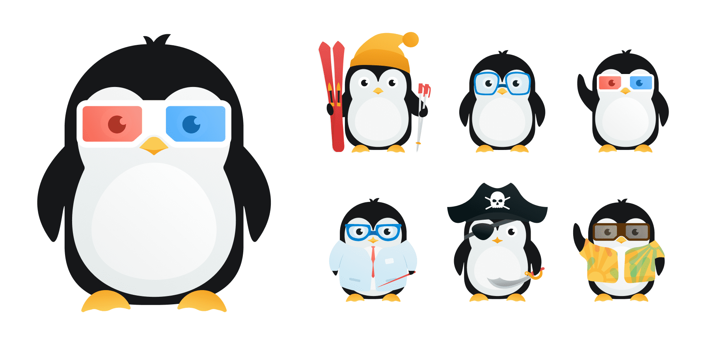
Personalized Onboarding
A game-like setup flow where users configure their glasses and eye settings, making the clinical calibration feel fun.
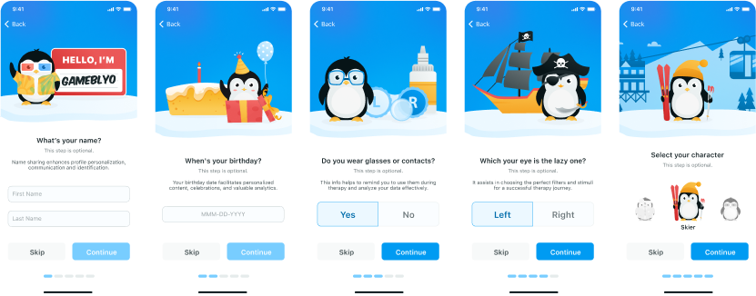
Onboarding
×A game-like setup flow where users configure their glasses and eye settings, making the clinical calibration feel fun.
Rewards system
Points, levels, and leaderboards make kids feel like they're progressing, not just doing therapy.
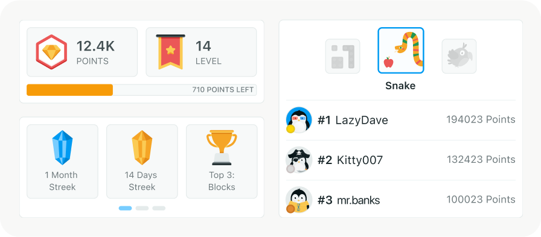
Rewards system
×Points, levels, and leaderboards make kids feel like they're progressing, not just doing therapy.
UI KIT
Created a complete UI kit — colors, typography, icons, buttons, inputs, cards, notifications, backgrounds — ensuring consistency across all screens and speeding up development.
The Product Suite
Patient App (iOS & Android)
The core experience: game selection, gameplay with therapeutic glasses, progress tracking, profile, and settings. Designed for kids but usable also by parents.
Doctor Platform (Web)
A dashboard for eyecare professionals to manage patients, monitor treatment progress, and adjust therapy parameters.
Landing Page
Marketing site for early access signups and investor communication.
Clinical Testing & Results
After receiving approval in Latvia, we conducted clinical testing with real patients under professional supervision.
Results showed clear superiority over the traditional patch method : in some cases, the lazy eye was fully restored. In the remaining cases, patients demonstrated significant measurable progress in weak-eye vision. Importantly, compliance was dramatically higher — children were motivated to play rather than resist treatment.
Current Status & Impact
-
3,000+ monthly active users and growing.
-
Recently rebuilt on scalable technologies to support growth and new markets.
-
Clinical results validated the therapeutic approach, with our SME — a leading amblyopia specialist in Latvia — continuing to advise the project.
-
A full product suite (patient app, doctor platform, landing page) designed and launched by a small founding team.
Reflection
This project is personal in a way client work never is. Every design decision affects a child's treatment, a parent's peace of mind, and a doctor's trust.
Designing for kids with a medical condition taught me to balance fun and clinical precision. What started as an idea now helps 3,000+ monthly active users with validated results.